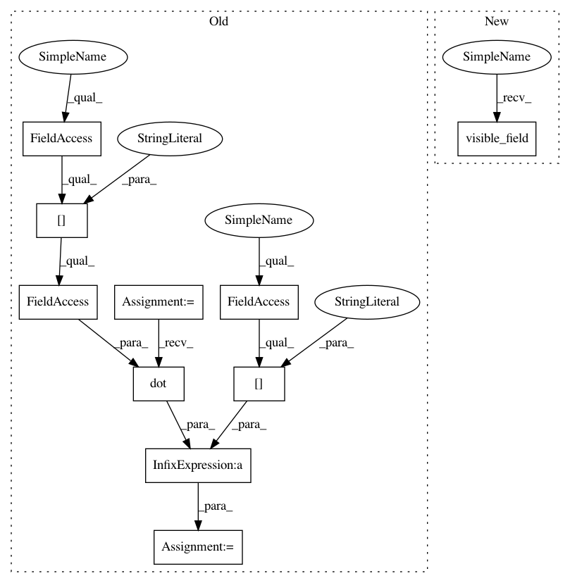

de7eb71909ad2ef9c92b3d08fff5e08c0d6a334f,paysage/models/hidden.py,RestrictedBoltzmannMachine,visible_mode,#RestrictedBoltzmannMachine#Any#,148
Before Change
return self.layers["visible"].mean(field)
def visible_mode(self, hidden):
field = self.params["visible_bias"] + numpy.dot(hidden, self.params["weights"].T)
return self.layers["visible"].prox(field)
def joint_energy(self, visible, hidden):
energy = -numpy.dot(visible, self.params["visible_bias"]) - numpy.dot(hidden, self.params["hidden_bias"])
After Change
return self.layers["visible"].mean(self.visible_field(hidden))
def visible_mode(self, hidden):
return self.layers["visible"].prox(self.visible_field(hidden))
def joint_energy(self, visible, hidden):
energy = -numpy.dot(visible, self.params["visible_bias"]) - numpy.dot(hidden, self.params["hidden_bias"])
In pattern: SUPERPATTERN
Frequency: 3
Non-data size: 10
Instances
Project Name: drckf/paysage
Commit Name: de7eb71909ad2ef9c92b3d08fff5e08c0d6a334f
Time: 2016-12-11
Author: charlesfisher@Charless-MacBook-Pro.local
File Name: paysage/models/hidden.py
Class Name: RestrictedBoltzmannMachine
Method Name: visible_mode
Project Name: drckf/paysage
Commit Name: de7eb71909ad2ef9c92b3d08fff5e08c0d6a334f
Time: 2016-12-11
Author: charlesfisher@Charless-MacBook-Pro.local
File Name: paysage/models/hidden.py
Class Name: RestrictedBoltzmannMachine
Method Name: visible_mean
Project Name: drckf/paysage
Commit Name: de7eb71909ad2ef9c92b3d08fff5e08c0d6a334f
Time: 2016-12-11
Author: charlesfisher@Charless-MacBook-Pro.local
File Name: paysage/models/hidden.py
Class Name: RestrictedBoltzmannMachine
Method Name: sample_visible